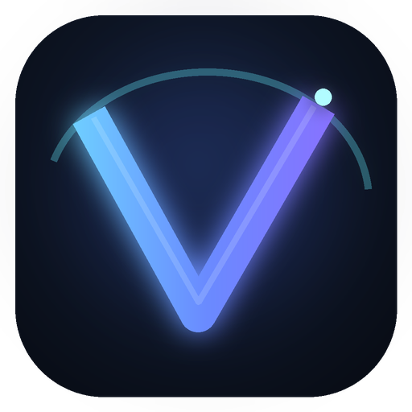

⌁
TECNOLOGIAO futuro da navegação está aqui
Mais rápido, mais seguro, mais teu.

VeyraNavega do teu jeito.
Mais rápido, mais seguro, mais teu.
Um browser leve pensado para trabalhar.
A web sem distrações desnecessárias.
Controlo local e navegação segura.